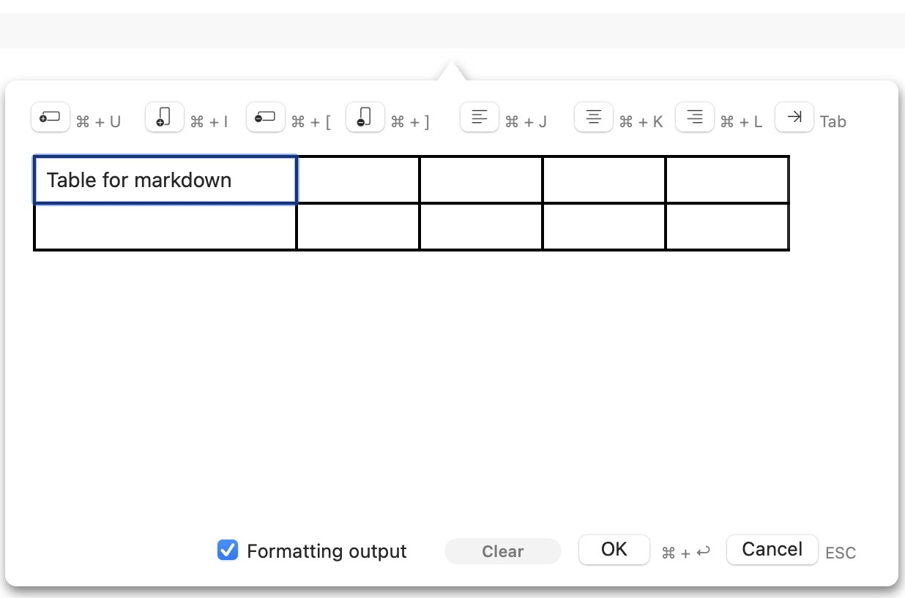
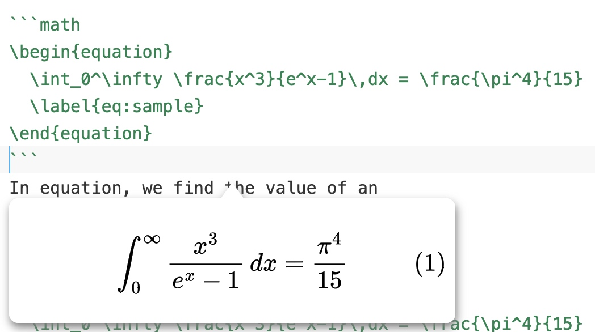

Markdown syntax input assistance
In MWeb for macOS:
All supported Markdown syntaxes can be found in the "Syntax" menu or under the "Aa" button on the toolbar, and all syntaxes come with shortcuts for quick typing. Also, if you prefer to use the toolbar, you can use the menu: View - Customize Toolbar to customize the syntax input buttons on the toolbar.
In MWeb for iPadOS/iOS:
All supported Markdown syntaxes can be found in the toolbar of the virtual keyboard. In iOS, due to the small screen, you can click the "M" button on the toolbar to view all grammar buttons. If you want to customize the buttons on the toolbar, you can click the "AA" button in the upper right corner of the editor, and then click "Customize Markdown keyboard..." to customize. If you want to sea the shortcut keys, you can press and hold the "CMD" key.
Edit and preview, outline view
All platforms support edit-preview mode and outline vie. The related shortcut keys are as follows:
- Toggle edit and preview:
CMD + R - Toggle edit-preview mode:
CMD + 4 - Show and hide outline view:
CMD + 7
The above functions also have related buttons on the toolbar. In MWeb for macOS, you can also choose the display mode of the outline view. There are currently three types: fixed on the left side of the editor, fixed on the right side of the editor, and floating. This setting can be modified using the View menu.
Editor theme and preview style
macOS/iPadOS/iOS now have a dark theme and a light theme, so MWeb can also set the theme used when the system dark/light theme respectively. MWeb for macOS can be set in Preferences - Themes & Styles, MWeb for iOS can be set by clicking the "AA" button in the upper right corner of the edit, or in the settings page.
The preview styles of MWeb 4.x are merged with the editor styles and are collectively referred to as "themes". If you want to customize the editor style or preview style, you need to customize the theme first. In MWeb for macOS, you can click the "Custom Theme" button in Preferences - Themes & Styles; in MWeb for iPadOS/iOS, you can click the "AA" button in the upper right corner of Edit, and then click the current theme button , in the theme switching interface that appears, click the "..." button in the upper right corner to customize the theme.
If you want to customize the preview style, pay attention to the "Automatically generate preview CSS by editor" checkbox in the custom theme editing interface. If this checkbox is checked, MWeb will automatically generate the relevant CSS styles according to the color of the currently defined editor theme. If necessary, you can also fill in the redefined CSS styles in the input box below; if not checked, the related CSS styles will not be generated. In this case, you can fill in your own complete CSS styles in the input box below.
Support for insert images
Markdown is a plain text file. It does not come with any images and other attachments. Images and attachments are all referenced and stored outside the Markdown text. The main and most important feature of Markdown is "easy to read and write". In order to highlight these two advantages, I think it is necessary to be able to view the referenced images directly. Therefore, MWeb can display Markdown-referenced local and network images directly in the editor. There are four settings for this feature: show images, show thumbnails, overlay in Editor, and not show the images. If you want to modify the settings, you can set them in the Preferences in macOS/iPadOS/iOS. In macOS, you can also click the "eye" button on the toolbar to set, and in iPadOS/iOS, you can click the "AA" button in the upper right corner of the editor to set. .
macOS/iPadOS/iOS supports copying, pasting, and dragging to insert images. Of course, you can also use the Insert Image button on the toolbar to insert images.
If you're on macOS, try the following to learn more about MWeb's aspects of inserting images:
- Press
Ctrl + CMD + Shift + 4, drag and take a screenshot, in MWeb, pressCMD + Vto paste, and you can insert a image. If you want to insert an image in PNG format, you can use the menu:Edit-Paste as PNG. - In a browser (eg: Safari), find a image, then
right-click the image-copy image, return to MWeb, and pressCMD + Vto paste to insert the image. - Drag and drop images directly from Finder to MWeb Editor to insert images.
- In the Finder, find an image file, press
CMD + C, return to MWeb, and pressCMD + Vto insert it. - Use the menu:
Actions - Multi Images to One Image..to experience the puzzle feature of MWeb. - Find an article with images and text in the website, select the images and text, press
CMD + Cto copy, return to MWeb, use the menu:Edit - Paste Markdown from HTML. This will automatically convert the web page to Markdown. If you want to download the network images in the webpage, you can use the menu:Edit - Remote Images Downloadto download the images to the local.
Set image width
The special syntax introduced by MWeb to set the image width is to add -w + image width after the image description. For example, to set the width of the above image to 140, the syntax is as follows:

MWeb support for inserting tables
You can press the Insert Table button on the toolbar to insert a table, or you can use the shortcut key Ctrl + Shift + T, as shown in the figure below for table insertion support on macOS, and this feature is also available on iPadOS/iOS:

For an existing table, you can move the cursor to the table syntax, and then use the Insert Table button to modify the existing table. You can insert a table first and then try to modify it.
MWeb's assistance for LaTeX, mermaid, echarts writing
In the MWeb editor, you can preview the LaTeX formula by moving the cursor to the middle of LaTeX. If you modify the formula, the preview will also be updated in real time. The following figure shows the assistance of LaTeX formulas, as well as the assistance of mermaid and echarts:
